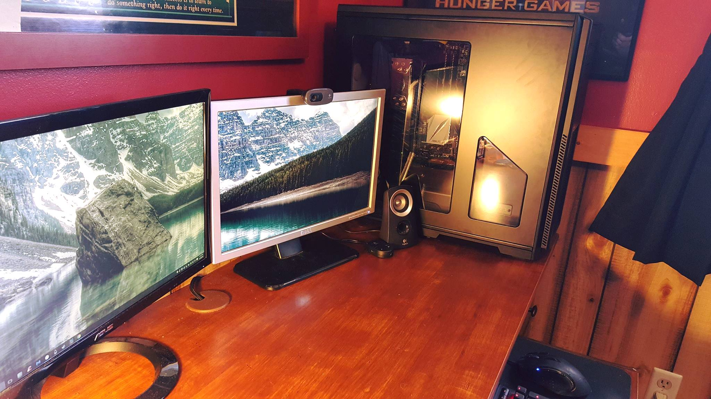

This essay is to describe my three favorite properties for the Hypertext Markup Language (HTML) using CSS. This document was made for CIS-255 SP18 at Saginaw Valley State University. The photo on the right features the computer I used to code this entire document on.
This has been one of my favorite properties to use so far as it helps with aligning text not only inside paragraphs, but inside tables as well. You can left, center, or right align text inside columns, tables, or without any sort of formatting at all. For this example, I've created a stair-like figure by using each of the alignments that can be used with this property:
left
center
right
This property struck me as an interesting thing to use in your webpages. The property allows you to change the visibility of an element to either being visible, or hidden.
For example, the sentence being written here is visible for you to see, classified as sentence "a", but the sentence that follows, classified as "b", is invisible.
This sentence is hidden to the viewer, but in the code it is there under the property of "hidden."
This is implemented by stating in the style section that one sentence is visible, and the other is hidden. The space is still filled with the sentence that would be there, but is instead invisible to the user.When I saw this property, I immediately wanted to play with it. This property animates an element on screen to move its position from one place to another. In this particular example, a box is made that is coded to move from 50px on the right to 0px on the left of the screen in the column, then reset after 5 seconds:
Note: The animation property is not supported by Internet Explorer 9 and earlier versions, and this particular example was also not coded to work with Safari browsers.
This is a simple, but very useful property that makes text more creative in your document. With it, you can change the color of text inside a heading or paragraph, defined inside the style section.
For example, this sentence can be made blue.
Then, this sentence can be made red.
Its a very simple property that allows you to change colors of text, and can be used in different scenarios to increase creativity.This property is useful for for defining the direction in which text goes on a page, or in this instance, inside of a column. Similar to how you would reverse text, you define this property in the style section, and tell a header or sentence to go in a different direction. If I wanted to, for whatever reason, create text that starts in an opposite direction of the previous paragraph, I would:
write a sentence that goes in the normal direction on page, then
use the direction "rtl" to set the text to go from right to left.
In short, all of these properties are defined inside the style section at the beginning of the code, and can implement all sorts of different actions and styles to create diversity inside your document. The ones I chose were those that stood out most to me, and with a little creativity, can be used to create almost any interesting webpage of your design. In addition, on mobile, using media queries, this document will appear to have a light grey background compared to the white background it displays on desktop.
Here is a screenshot of the webpage title changing color to purple using Chrome DevTools: